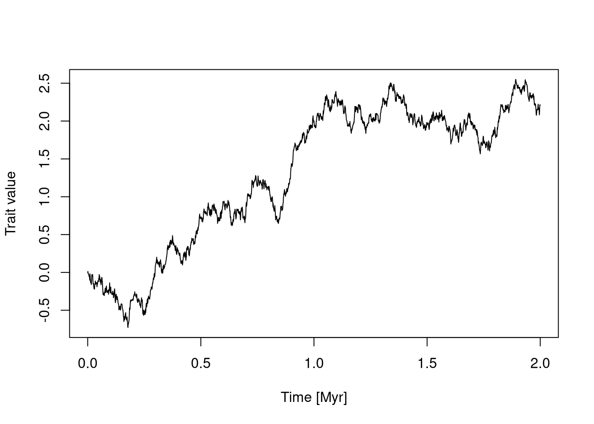
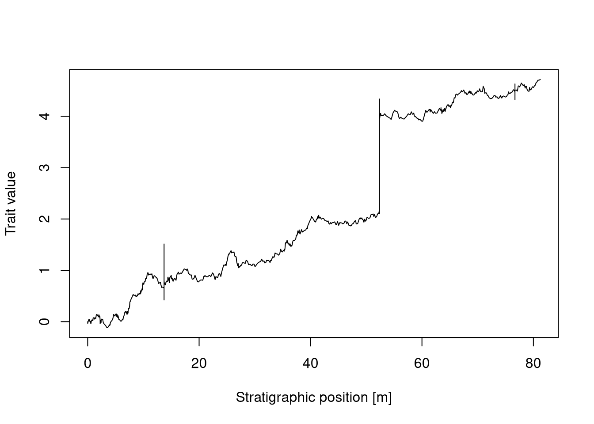
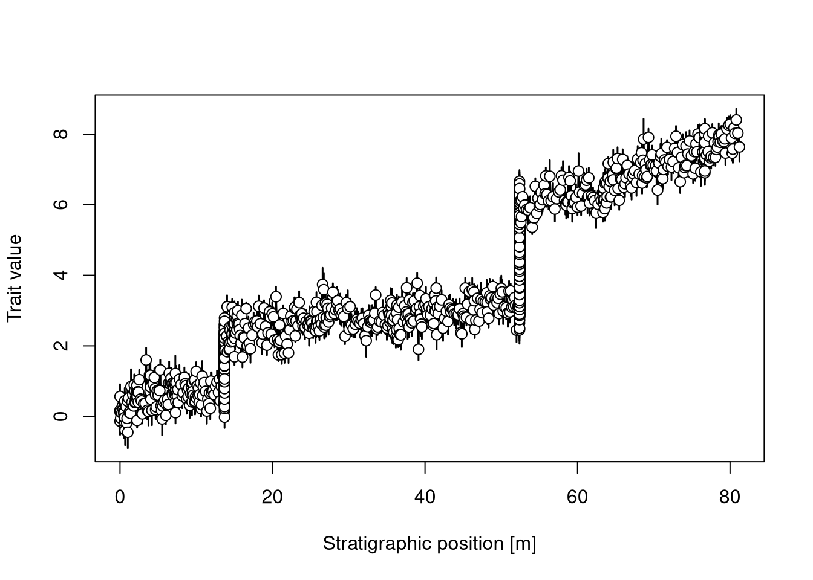
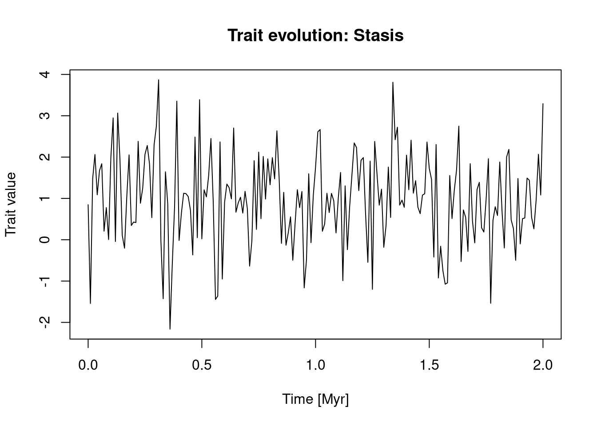
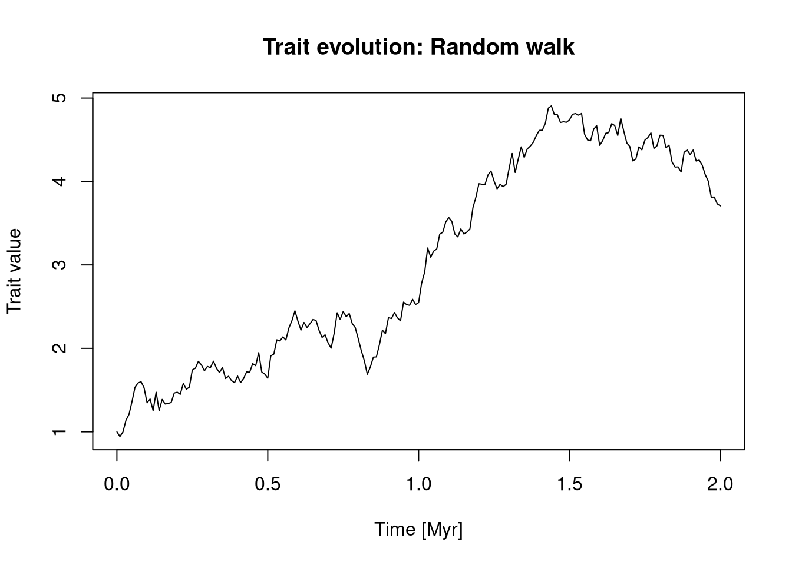
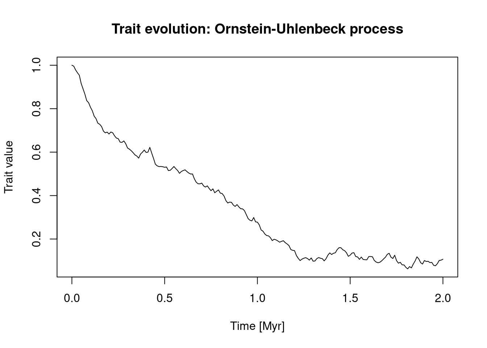
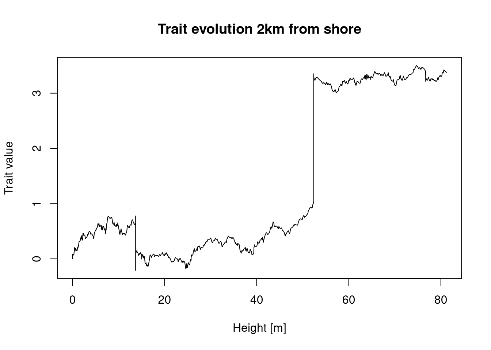

This practical explores how trait evolution is influenced by stratigraphic architectures.
Introduction
Coding cheat sheet
Modes of evolution in the time domain
There are three different modes of evolution implemented in the StratPal package: stasis, random_walk, and ornstein_uhlenbeck. You can plot them using piping via
library(StratPal)library(admtools)pos ="2km"adm =tp_to_adm(t = scenarioA$t_myr, h = scenarioA$h_m[,pos],T_unit ="Myr",L_unit ="m")temp_res =0.001# temporal resolution in Myrseq(min_time(adm), max_time(adm), by = temp_res) |># time steps where the trait evolution is simulatedrandom_walk(sigma =1, mu =0, y0 =0) |># simulate trait evolutionplot(xlab =paste0("Time [",get_T_unit(adm),"]"), # plotylab ="Trait value",type ="l")

To plot other modes, replace random_walk by one of the other modes (stasis or ornstein_uhlenbeck).
Transforming trait evolution into the stratigraphic domain
To transform trait evolution into the stratigraphic domain, insert time_to_strat with the age-depth model of your choice into your pipeline:
temp_res =0.001# temporal resolution in Myrseq(min_time(adm), max_time(adm), by = temp_res) |># time steps where the trait evolution is simulatedrandom_walk(sigma =1, mu =3, y0 =0) |># simulate trait evolutiontime_to_strat(adm, destructive =FALSE) |># transform into stratigraphic domainplot(xlab =paste0("Stratigraphic position [",get_L_unit(adm),"]"), # plotylab ="Trait value",type ="l",orientation ="lr")

This will transform your simulations from the time domain into the stratigraphic domain.
Model selection using the paleoTS package
To work with model selection, we need to simulate traits of individual specimems, not just means of populations. This is indicated by using the suffix _sl (for “specimen level”) in the simulation.
library(paleoTS)temp_res =0.001# temporal resolution in Myrseq(min_time(adm), max_time(adm), by = temp_res) |># time steps where the trait evolution is simulatedrandom_walk_sl(sigma =1, mu =3, y0 =0) |># simulate trait evolutiontime_to_strat(adm, destructive =FALSE) |>reduce_to_paleoTS() |># transform into stratigraphic domainplot(xlab =paste0("Stratigraphic position [",get_L_unit(adm),"]"), # plotylab ="Trait value")

see ?reduce_to_paleoTS for details. We can then directly pass the results to the model selection options available in paleoTS:
temp_res =0.01# temporal resolution in Myrseq(min_time(adm), max_time(adm), by = temp_res) |># time steps where the trait evolution is simulatedrandom_walk_sl(sigma =1, mu =3, y0 =0) |># simulate trait evolutiontime_to_strat(adm, destructive =FALSE) |>reduce_to_paleoTS() |>fit4models()
Warning in
fit4models(reduce_to_paleoTS(time_to_strat(random_walk_sl(seq(min_time(adm), :
Sample variances not equal (P = 0 ); consider using argument pool=FALSE
You can also solve the first two tasks interactively using DarwinCAT.
ImportantTask 1: Trait evolution in the time domain
Plot the different modes of evolution in the time domain.
What is their internal variation due to randomness (i.e., how much do results differ if you plot them multiple times)?
What is the biological meaning of the model parameters?
ImportantTask 2: Stratigraphic effects on trait evolution
Transform the different modes of evolution into the stratigraphic domain and plot them.
Which modes are most/least affected by stratigraphic biases?
Do you see any systematic changes?
ImportantTask 3: Model selection in the stratigraphic domain
Run model selection on your simulations using the paleoTS package, and compare results from the time and the stratigraphic domain.
Do you see any systematic biases?
Solutions
You can also explore this topic interactively using DarwinCAT.
NoteSolution Task 1: Trait evolution in the time domain
Plot the different modes of evolution in the time domain.
What is their internal variation due to randomness (i.e., how much do results differ if you plot them multiple times)?
What is the biological meaning of the model parameters?
min_t =0# beginning observation [Myr]max_t =2# end observation [Myr]t_step =0.01# temporal resolution [Myr]mean =1# model parameter, to modifysd =1# model parameter, to modifyseq(from = min_t, to = max_t, by = t_step) |>stasis(mean = mean, sd = sd) |>plot(type ="l",xlab ="Time [Myr]",ylab ="Trait value",main ="Trait evolution: Stasis")

For stasis, the mean parameter determines the mean trait value, and the sd (standard deviation) parameter determines the spread of trait values. Trait values at individual times are uncorrelated, so if the temporal resolution is increased, trait evolution appears more irregular.
min_t =0# beginning observation [Myr]max_t =2# end observation [Myr]t_step =0.01# temporal resolution [Myr]sigma =1# model parameter, to modifymu =1# model parameter, to modifyy0 =1# model parameter, to modifyseq(from = min_t, to = max_t, by = t_step) |>random_walk(sigma = sigma, mu = mu, y0 = y0) |>plot(type ="l",xlab ="Time [Myr]",ylab ="Trait value",main ="Trait evolution: Random walk")

For the random walk model, the y0 parameter determines the initial trait value. The parameter mu determines the directionality, with positive (negative) values leading to increasing (decreasing) trait values with time. The sigma parameter determines the amount of randomness in the system, with larger values reflecting more randomness. Internal variability is high for larger values of sigma, meaning individual lineages simulated will differ a lot from each other.
Important endmembers are: sigma set to 0, trait evolution is purely deterministic and specified by mu and y0. If mu and y0 are set to 0, trait evolution follows an unbiased random walk model. If sigma is set to 1, the model corresponds to a Brownian motion. For low values of sigma and mu, the random walk can be mistaken for stasis.
min_t =0# beginning observation [Myr]max_t =2# end observation [Myr]t_step =0.01# temporal resolution [Myr]theta =1# model parameter, to modifysigma =0.1# model parameter, to modifymu =0# model parameter, to modifyy0 =1# model parameter, to modifyseq(from = min_t, to = max_t, by = t_step) |>ornstein_uhlenbeck(mu = mu, theta = theta, sigma = sigma, y0 = y0) |>plot(type ="l",xlab ="Time [Myr]",ylab ="Trait value",main ="Trait evolution: Ornstein-Uhlenbeck process")

For the Ornstein-Uhlenbeck (OU) model, the parameter y0 represents the initial trait value. The parameter mu determines the long term mean of the process, theta how fast this mean is approached, and sigma how strong the influence of randomness is. This model is used to model convergence from an initial trait value y0 to an optimum mu under pressure of selection theta and random influences sigma.
Internal variation is determined by the sigma parameter, where larger values result in greater variation in simulated trait values.
Important endmembers of the OU model are:
autocorrelated stasis, when y0 = mu (start in the optimum)
directional evolution when the optimum mu is far away from the initial trait value y0, and selection is present
random walk when selection theta is 0
NoteSolution Task 2: Stratigraphic effects on trait evolution
Transform the different modes of evolution into the stratigraphic domain and plot them.
Which modes are most/least affected by stratigraphic biases?
Do you see any systematic changes?
Example code for the random walk model is provided. This can be expanded by replacing the random walk by stasis or the Ornstein-Uhlenbeck process.
adm_list =list() # storage for age-depth modelsdist =paste(seq(2, 12, by =2), "km", sep ="") # distances from shorefor (pos in dist){ # construct ADMs for all distances adm_list[[pos]] =tp_to_adm(t = scenarioA$t_myr, h = scenarioA$h_m[,pos],T_unit ="Myr",L_unit ="m")}pos ="2km"# position on platformmu =2# model parameterssigma =1# model parametersy0 =0# model paramtersadm = adm_list[[pos]] # select age-depth modelt_step =0.001# temporal resolution [Myr]## plot trait evolution in the time domainseq(from =min_time(adm), to =max_time(adm), by = t_step) |>random_walk(sigma = sigma, mu = mu, y0 = y0) |>time_to_strat(adm, destructive =FALSE) |>plot(ylab ="Trait value",type ="l",orientation ="lr",xlab ="Height [m]",main =paste0("Trait evolution ", pos, " from shore") )

Stasis is unaffected by stratigraphic biases. This is because if there is no net change of traits in the time domain, losing parts of the lineage because of hiatuses does not affect the overall pattern.
For the random walk and the Ornstein-Uhlenbeck process, the degree of bias depends on the directionality of evolution. The more the traits change over a hiatus or a condensed interval, the more the stratigraphic expression of trait evolution differs from the one in the time domain. As a result, stratigraphic biases are strongest in the random walk model for large mu, and in the Ornstein-Uhlenbeck model for large differences between y0 and mu.
The effects are strongest if
There are long hiatuses or
There are long intervals of sedimentary condensation.
As a result, stratigraphic biases are driven by maximum hiatus duration on the platform top, and driven by sedimentary condensation on the slope (see task on age-depth models). This effect is more pronounced the more directional evolution is.
NoteSolution Task 3: Model selection in the stratigraphic domain
TBA
temp_res =0.1# temporal resolution in Myrseq(min_time(adm), max_time(adm), by = temp_res) |># time steps where the trait evolution is simulatedrandom_walk_sl(sigma =1, mu =3, y0 =0) |># simulate trait evolutiontime_to_strat(adm, destructive =FALSE) |>reduce_to_paleoTS() |>fit9models()